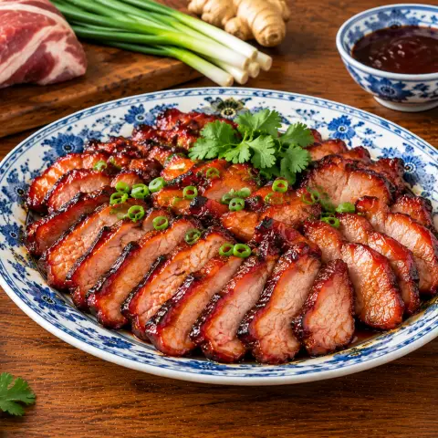

🍖 차슈 (중국식 바비큐 돼지고기)
돼지 앞다리살을 달콤한 오향 해선장 양념에 재워 끈적하게 캐러멜화될 때까지 구워요.
재료
- 돼지고기1,360 g
- 설탕50 g
- 소금2 작은술
- 오향분0.5 작은술
- 후추0.25 작은술
- 참기름0.5 작은술
- 맛술1 큰술
- 간장1 큰술
- 해선장1 큰술
- 꿀2.5 큰술
- 마늘3 쪽
만드는 법
- 앞다리살을 5~7cm 두께로 길게 썰어요. 설탕, 소금, 오향분, 백후추, 참기름, 술, 간장, 해선장, 꿀 2작은술, 다진 마늘을 섞어요. 2큰술은 따로 두고 나머지를 고기에 발라 냉장고에서 8시간 이상 재워요.
- 오븐을 245°C로 예열하고 선반을 위쪽 3분의 1에 둬요. 팬에 호일을 깔고 망을 올린 뒤 팬에 물 360ml를 붓고 고기를 망 위에 올려요.
- 10분 굽고 190°C로 낮춰 15분 더 구워요. 고기를 뒤집고 팬이 마르면 물을 조금 넣어 15분 더 구워요.
- 따로 둔 양념에 남은 꿀과 뜨거운 물 1큰술을 섞어 고기 양면에 바르고, 속 온도가 63°C가 될 때까지 10분 더 구워요.
- 10분 쉬게 한 뒤 남은 양념을 바르고 썰어요.